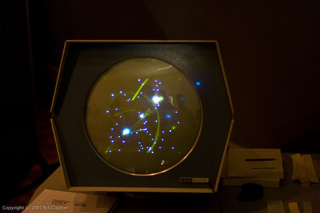
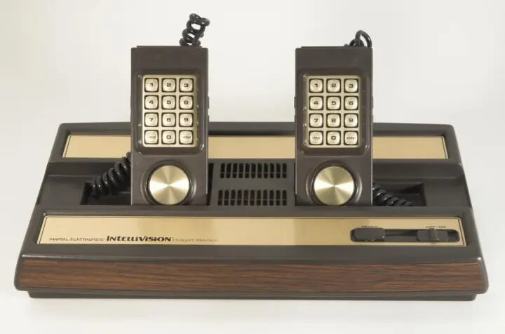

el físico William Higginbotham a traves de un programa de cálculo de trayectorias y un osciloscopio creo lo que se llamaria "Tenis para Dos" que es un simulador de tenis de sobremesa utilizado como sistema de entretenimiento en la exposición Brookhaven National Laboratory
este fue el primer videojuego en ser de dos jugadores, 4 años despues Steve Russell (estudiante del Instituto de Tecnología de Massachussets) le tomo 6 meses para crear un juego para computadora con gráficos vectoriales, dicho juego era Spacewar, el juego trataba de que dos jugadores controlaban la dirección y velocidad de dos naves que luchaban entre ellas, el videojuego funcionaba sobre un PDP-1 |
 |
En 1966 Ralph Baer empezo a desarrollar junto a Albert Maricon y Ted Dabney, un proyecto llamado Fox and Hounds comenzando así el videojuego doméstico, este mismo evolucionaria hasta convertirse en la Magnavox Oddyssey en 1972, siendo el primer sistema en poder conectarse a la televisión de aquel entonces, donde permitia jugar a varios juegos pregrabados
Segunda Etapa De Los Videojuegos (1970-1979)
Un hito importante en el inicio de los videojuegos ocurrio en 1971 cuando Nolan Bushnell comercializo Computer Space, siendo este una versión de Space War, el ascenso del mundo de los videojuegos llegó con la maquina recreativa Pong, que es la versión comercial del juego "Tenis para Dos" de Higginbotham, el sistema fue diseñado por Al Alcom para Nolan Bushnell en la recién fundada Atari, el juego se presentó en 1972, durante los años siguientes hubieron numerosos avances técnicos en los videojuegos, siendo los principales los microprocesadores y los chips de memoria, estos se implantaron en los salones recreativos en juegos, como Space Invaders (de Taito) o Asteroids (de Atari)
 |
La Década De Los 8 Bit (1980-1989)
Los años 80 comenzaron con un fuerte crecimiento en el sector de los videojuegos, gracias a la popularidad de los salones de maquinas recreativas y de las primeras consolas aparecidas durante la década de los 70, pero siguiendo con lo que estaba, en estos años destacaron sistemas tales como la Oddyssey 2 (de Phillips), la Intellivision (de Mattel), la Colecovision (de Coleco) y por ultimo la Atari 5200, Commodore 64 y Turbografx (de NEC). Por otro lado en las máquinas recreativas triunfaron juegos como el ya conocido Pacman (de Namco), Battle Zone (de Atari), Pole Position (también de Namco), Tron (de Midway) o Zaxxon (de Sega)
|  | |
en los años 80 se alcanzaron a tener grandes cosas pero sin embargo, en 1983 comenzó la llamada crisis del videojuego, afectando principalmente a Estados Unidos y Canadá, y que no llegaría a su fin hasta 1985,Japón apostó por el mundo de las consolas con el éxito de la Famicom (llamada en occidente como Nintendo Entertainment System), lanzada por Nintendo en 1983 mientras en Europa se decantaba por los microordenadores como el Commodore 64 o el Spectrum,A la salida de su particular crisis los norteamericanos continuaron la senda abierta por los japoneses y adoptaron la NES como principal sistema de videojuegos. A lo largo de la década fueron apareciendo nuevos sistemas domésticos como la Master System (Sega), el Amiga (Commodore) y el 7800 (Atari) con juegos hoy en día considerados clásicos como el Tetris,A finales de los 80 comenzaron a aparecer las consolas de 16 bits como la Mega Drive de Sega y los microordenadores fueron lentamente sustituidos por las computadoras personales basadas en arquitecturas de IBM.
 |
En 1985 apareció Super Mario Bros, que supuso un punto de inflexión en el desarrollo de los juegos electrónicos, ya que la mayoría de los juegos anteriores sólo contenían unas pocas pantallas que se repetían en un bucle y el objetivo simplemente era hacer una alta puntuación. El juego desarrollado por Nintendo supuso un estallido de creatividad. Por primera vez teníamos un objetivo y un final en un videojuego. En los años posteriores otras compañías emularon su estilo de juego. En el campo de las recreativas, destacaron videojuegos como Defender, Rally-X, Dig Dug, Bubble Bobble, Gauntlet, Out Run o Shinobi además de producirse un cambio en cuanto a la nacionalidad de los juegos pasando a ser Japón la mayor productora. Otra rama de los videojuegos que creció con fuerza fue la de los videojuegos portátiles. Estos comenzaron a principios de los 70 con los primeros juegos completamente electrónicos lanzados por Mattel, los cuales difícilmente podían considerarse como videojuegos, y fueron creciendo en popularidad gracias a conversiones de recreativas como las realizadas por Coleco o adictivos microjuegos como las Game & Watch de Nintendo. La evolución definitiva de las portátiles como plataformas de videojuego llegó en 1989 con el lanzamiento de la Game Boy (Nintendo).
1990-1999: La Revolución Del 3D
A principios de los años 90 las videoconsolas dieron un importante salto técnico gracias a la competición de
la llamada "generación de 16 bits" compuesta por la Mega Drive, la Super Nintendo Entertainmet de Nintendo, la PC Engine de NEC, conocida como Turbografx en occidente y la CPS Changer de (Capcom).
Junto a ellas también apareció la Neo Geo (SNK) una consola que igualaba las prestaciones técnicas de un arcade pero demasiado cara para llegar de forma masiva a los hogares.
Esta generación supuso un importante aumento en la cantidad de jugadores y la introducción de tecnologías como el CD-ROM, una importante evolución dentro de los diferentes géneros de videojuegos, principalmente gracias a las nuevas capacidades técnicas.
Mientras tanto diversas compañías habían comenzado a trabajar en videojuegos con entornos tridimensionales, principalmente en el campo de los PC, obteniendo diferentes resultados desde las “2D y media” de Doom, 3D completas de 4D Boxing a las 3D sobre entornos pre-renderizados de Alone in Dark. Referente a las ya antiguas consolas de 16 bits, su mayor y último logro se produciría por el SNES mediante la tecnología 3-D de pre-renderizados de SGI, siendo su máxima expresión juegos como Donkey Kong Country y Killer Instinct. También surgió el primero juego poligonal en consola, la competencia de la SNES, Mega-Drive, lanzó el Virtual Racing, que tuvo un gran éxito ya que marcó un antes y un después en los juegos 3D en consola.
Rápidamente los videojuegos en 3D fueron ocupando un importante lugar en el mercado, principalmente gracias a la llamada "generación de 32 bits" en las videoconsolas: Sony PlayStation y Sega Saturn (principalmente en Japón); y la “generación de 64 bits” en las videoconsolas: Nintendo 64 y Atari jaguar. En cuanto a los ordenadores, se crearon las aceleradoras 3D.
La consola de Sony apareció tras un proyecto iniciado con Nintendo (denominado SNES PlayStation), que consistía en un periférico para SNES con lector de CD. Al final Nintendo rechazó la propuesta de Sony, puesto que Sega había desarrollado algo parecido sin tener éxito, y Sony lanzó independientemente PlayStation.
Por su parte los arcades comenzaron un lento pero imparable declive según aumentaba el acceso a consolas y ordenadores más potentes.
Por su parte los videojuegos portátiles, producto de las nuevas tecnologías más poderosas, comenzaron su verdadero auge, uniéndose a la Game Boy máquinas como la Game Gear (Sega), Linx (Atari) o la Neo Geo Pocket (SNK), aunque ninguna pudo hacerle frente a la popularidad de la Game Boy, siendo esta y sus descendientes (Game Boy Pocket, Game Boy Color, Game Boy Advance, Game Boy Advance SP) las dominadoras del mercado.
Hacia finales de la década la consola más popular era la PlayStation con juegos como Final Fantasy VII (Square), Resident Evil (Capcom), Winning Eleven 4 (Konami), Gran Turismo (Polyphony Digital) y Metal Gear Solid (konami).
En PC eran muy populares los FPS (juegos de acción en primera persona) como Quake (id Softare), Unreal (Epic Megagames) o Half-Life (Valve), y los RTS (juegos de estrategia en tiempo real) como Command & Conquer (Westwood) o Starcraft (Blizzard). Además, conexiones entre ordenadores mediante internet facilitaron el juego multijugador, convirtiéndolo en la opción predilecta de muchos jugadores, y fueron las responsables del nacimiento de los MMORPG (juegos de rol multijugador online) como Ultima Online (Origin). Finalmente en 1998 apareció en Japón la Dreamcast (Sega) y daría comienzo a la “generación de los 128 bits”.
Desde el 2000: El comienzo del nuevo siglo
En el 2000 Sony lanzó la anticipada PlayStation 2 y Sega lanzó otra consola con las mismas características técnicas de la Dreamcast, nada más que venia con un monitor de 14 pulgadas, un teclado, altavoces y los mismos mandos llamados Dreamcast Drivers 2000 Series CX-1. Microsoft entra en la industria de las consolas creando la Xbox en 2001. Nintendo lanzó el sucesor de la Nintendo 64, la Gamecube, y la primera Game Boy completamente nueva desde la creación de la compañía, la Game Boy Advance. Sega viendo que no podría competir, especialmente con una nueva máquina como la de Sony, anunció que ya no produciría hardware, convirtiéndose sólo en desarrolladora de software en 2002. El ordenador personal PC es la plataforma más cara de juegos pero también la que permite mayor flexibilidad. Esta flexibilidad proviene del hecho de poder añadir al ordenador componentes que se pueden mejorar constantemente, como son tarjetas gráficas o de sonido y accesorios como volantes, pedales y mandos, etc. Además es posible actualizar los juegos con parches oficiales o con nuevos añadidos realizados por la compañía que creó el juego o por otros usuarios.
 |
 |
 |
 |
 |
 |